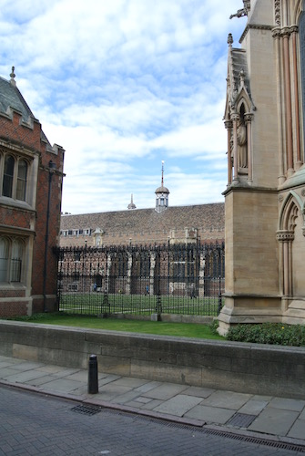
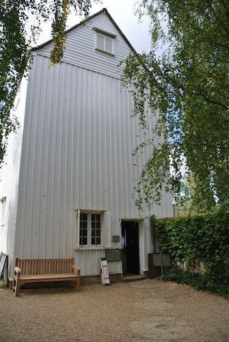

The Cam by Jesus Green and the entrance hall of the Fitzwilliam Museum.
The Cam by Jesus Green and the entrance hall of the Fitzwilliam Museum.
At the beginning of October we decided to have a few days holiday in Cambridge, a town that we did not know. On the journey we stopped just outside Cambridge to look at Walpole Hall, part of the Wimpole Estate and run by the National Trust. As well as being a very large house, it has an impressive stable block.
We stayed for two nights in a modern hotel a little way out of Cambridge, but on a bus route into the city. They did not get a very good report from us. The first night we decided to eat in the restaurant, but had to wait a very long time to get served. Then a tap in the bathroom came off in Angela's hand, sending water everywhere!
We took the bus from near the hotel into Cambridge city centre.
Great St Mary's Church from the Market in Cambridge city centre.
Kings College, front and from the Backs.
Mathematical Bridge, Queens College.
The Cam looking south and then north from Garret Hostel Lane bridge.
Also from Garret Hostel Lane bridge.
Trinity College.
St John's.
The Cam by Jesus Green and the entrance hall of the Fitzwilliam Museum.
The wind pump and boardwalk at Wicken Fen.
 Anglesey Abbey.
Anglesey Abbey.
Lode Mill at Anglesey Abbey.
Walk to the Lode Mill at Anglesey Abbey.
© David James 2015 Last updated: 30 September 2015